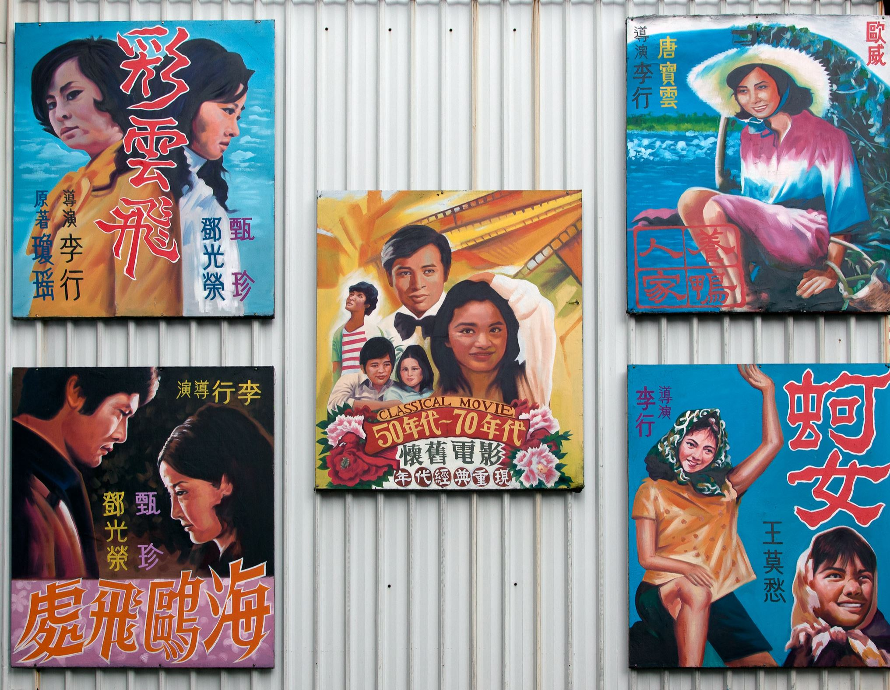

These are some of my favorite movies!
Feature films
Here are some of my favorite films of all-time:
- The Apu Trilogy (1955, 1956, 1959) Dir: Satyajit Ray
- Princess Mononoke (1997) Dir: Charles Chaplin
- Touch of Zen (1971) Dir: King Hu
- Underground (1995) Dir: Emir Kusturica
- The Kid (1921) Dir: Charles Chaplin
Documentaries
I love documentaries, too...here are a few of my favorite documentaries:
- As I Was Moving Ahead Occasionally I Saw Brief Glimpses of Beauty (2000) Dir: Jonas Mekas
- No Direction Home (2005) Dir: Martin Scorsese
- Lomax the Songhunter (2004) Dir: Rogier Kappers
- Louie Blueie (1985) Dir: Terry Zwigoff
- Hearts and Minds (1974) Dir: Peter Davis

Hand-painted movie posters in Tainan, Taiwan
Photo: Adam Blackbourn